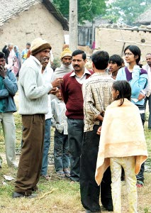

is arvind kejriwal really a hero?
.. or is he a super fraud that you did not know about until now ..
press left-right arrow keys to know the truth
OF COURSE HE IS!
And so are you and me, and everybody trying to do their bit of good. Everbody right from national Aam Aadmi Party team to their staunch opponents, and numerous concerned citizens who are contributing to fighting corruption.
site dedicated to
All the lovely people of Delhi. I had such a great time there during my recent first visit. And I could also tell how earnestly Delhi-ites are fighting the evils that plauge their city. Evils, beyond which, there lies a beautiful Delhi that I have now fallen in love with.
built by
a friend from Kolkata, who you are free to criticize and abuse
sorry .. got to go .. no time to add the 'like this' or 'tweet it' kind of buttons :-(
Many people are *falsely* led to believe that Arvind is a simple man, who is courageous, well educated, honest and a believer in fighting for the truth. So much so, that kids have even started dressing up as Arvind in fancy dress competitions!
But in reality Arvind is a very corrupt man and you deserve to know some shocking facts about him.
press left-right arrow keys to know the truth

Arvind has been working against corruption for a long time even before he was forced to enter politics. The above photo is from many years back when he used to help people as an RTI activist. I would highly recommend you to watch all 34 photos in this photo biography of Arvind, done by Aaj Tak to know more about Arvind before he decided to clean politics in India.
press the UP and then the RIGHT key to go back to other 'black slides' .. press DOWN key on any black slide to see its related 'white slide'
1 / 4
Press and media journalists get impressed by Arvind because they are lead to believe that he has full-proof evidence, and strong supporting documents of every expose he makes against corruption in India's governance.

Well, we all know journalists are such fools! They never care to check the facts. Arvind knew this too. So he always just collected previous year question papers of CBSE, filled them up in a file, and called it proof against corruption.
for interview of the brave CBSE director who revealed this, check the last slide
- What is the story of Delhi electricity scam? - In short, corrupt collusion between government and corny corporates + meters fixed incorrectly (in series) + proof of direct CM Sheila Dixit's involement in corruption + false bill harrasments for thousands of citizens + much more. If you have time, these two videos here give you all the logical details.
- Are Arvind's allegations really full proof? - You could check some of them here yourself. Or just search more on the internet, as Arvind has already brought all facts in the public domain, along with every proof that he had.
do try the links in red above if you have time now .. or check them later when you are free
press the UP and then the RIGHT key to go back to other 'black slides' .. press DOWN key on any black slide to see its related 'white slide'
2 / 4
You might think that Arvind is actually not eating anything since 23rd March, the martyr's day, to motivate citizens of Delhi. So that they quit their fear, and proudly disobey their corrupt government.
Truth is, Arvind's call to the Delhi citizens for a 'civil disobedience' and his upwas is all a sham. The before and after images above are completely false and were photoshop-ed by Aam Aadmi Party workers operating underground from Delhi.
for the secret photo morphing sting caught on camera, check the last slide
- Fasting is a political trick? - Sad that you think so! Try the "trick" yourself just for a day, and I am pretty sure you would think otherwise. Btw, Mahatma Gandhi and Bhagat Singh championed fasting as a form of peaceful protest and awakening citizens against misrule. Arvind draws his inspiration from them.
- How can I convince Arvind to break his fast? - Please do try! Unless you already know, the first step is to understand why he is fasting. His upwas is not for demanding justice from the government, but is a direct appeal to the people to quit their fear and demand justice themselves. Support Arvind only if you really believe he is honestly trying. Otherwise don't, and that is perfectly alright.
- Are there really any underground AAP workers in Delhi? - Haha! Yes there seem to be some, whether they are violent goondas or just concerned citizen's, you decide.
do try the links in red above if you have time now .. or check them later when you are free
press the UP and then the RIGHT key to go back to other 'black slides' .. press DOWN key on any black slide to see its related 'white slide'
3 / 4
Because of decreasing popularity of Arvind's non-voilent and peaceful protests, Aam Aadmi Party (AAP) is now desparately inviting internship proposals from all local goondas who can burn vechicles, damage public property and win a respectable amount of citizen support, just like other political parties of India successfully do.
to know what cruel eligibity criteria has AAP relased for its 'goonda internship', check the last slide
- Goondas at AAP? - You wish! Instead you will find people singing bhajans and Arvind joining in with his "melodious" voice too :-)
- Popularity decreasing? - No way! Supporters of Arvind's peaceful protest are increasing everyday. Question remains, shouldn't you be there too?
- But media coverage is less? - Yes, and that is totally expected. After how Mukesh Ambani threatened the media houses and how Arvind replied back.
- Is there an actual internship criteria? - Glad you asked! Pretty simple actually.
do try the links in red above if you have time now .. or check them later when you are free
press the UP and then the RIGHT key to go back to other 'black slides' .. press DOWN key on any black slide to see its related 'white slide'
THE LAST SLIDE
Ah crap! You are actually here. It was not expected you would come this far at all, because everybody knows that an Indian citizen never cares for the truth anyway. **
Pretty much like how you ignore corruption, hate-politics, goondaism, caste-ism, crimes against women, villagers dying from draught, broken education system, fractured health care and a gazillion other problems - without caring to fix them yourselves or questioning the politicans who you had elected to work honestly and address the above problems effectively.
** after you have realized that the date today is 1st April 2013, try pressing the DOWN key on each 'black slide' including this one :-)
A NEW HOPE
Today's India can fight and solve their own problems perfectly alright, with or without support from political parties, all we need is - to work like citizens who care.
Just like how our ancestors had fought for ages against the explotative foreign rule, and had won most triumphantly, through non-violent and peaceful means never before seen by the world of those times.
do try the links in red above if you have time now .. or check them later when you are free
press the UP and then the RIGHT key to go back to other 'black slides' .. press DOWN key on any black slide to see its related 'white slide'